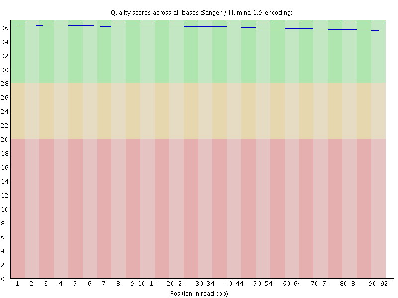
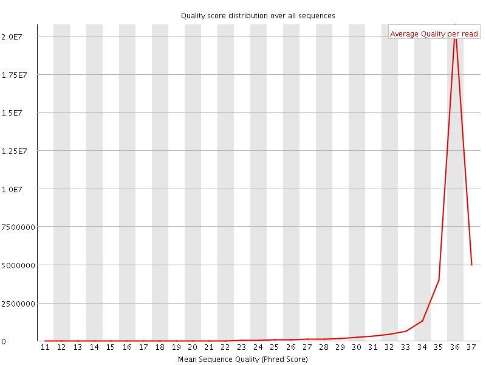
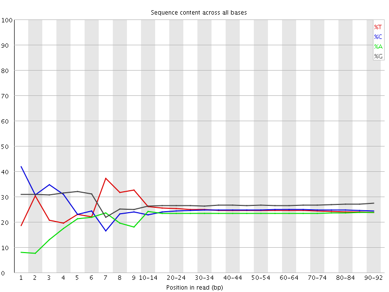
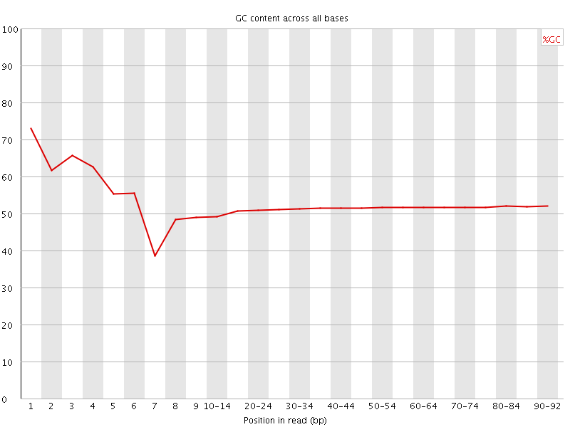
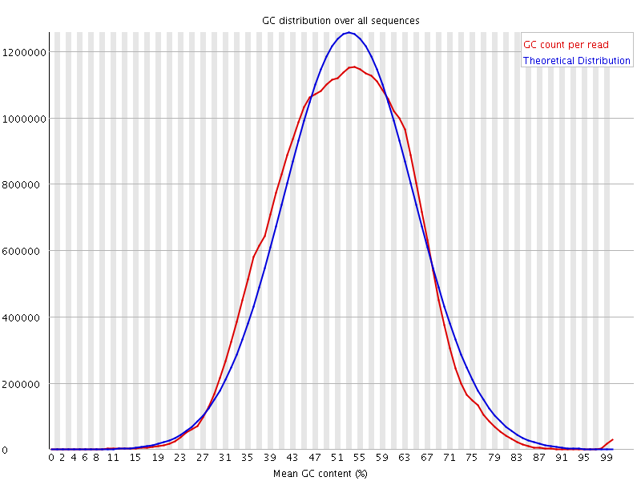
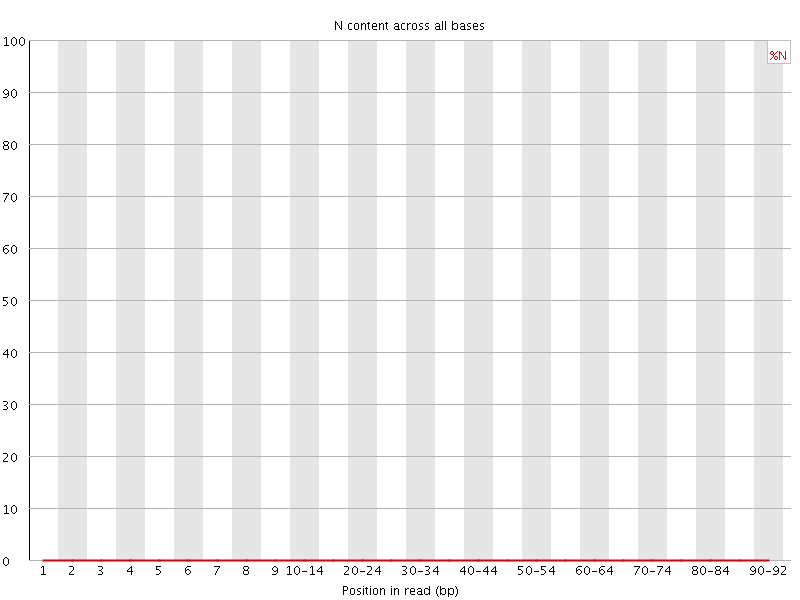
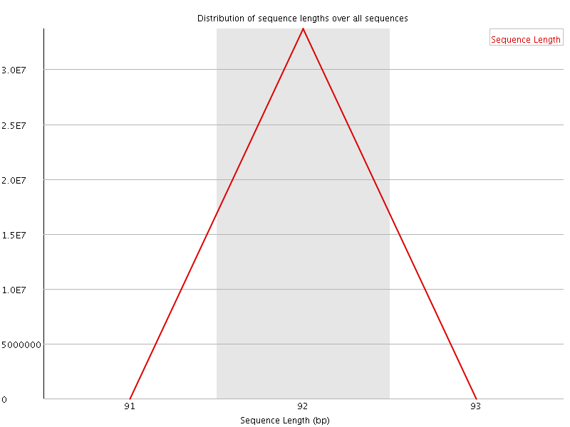
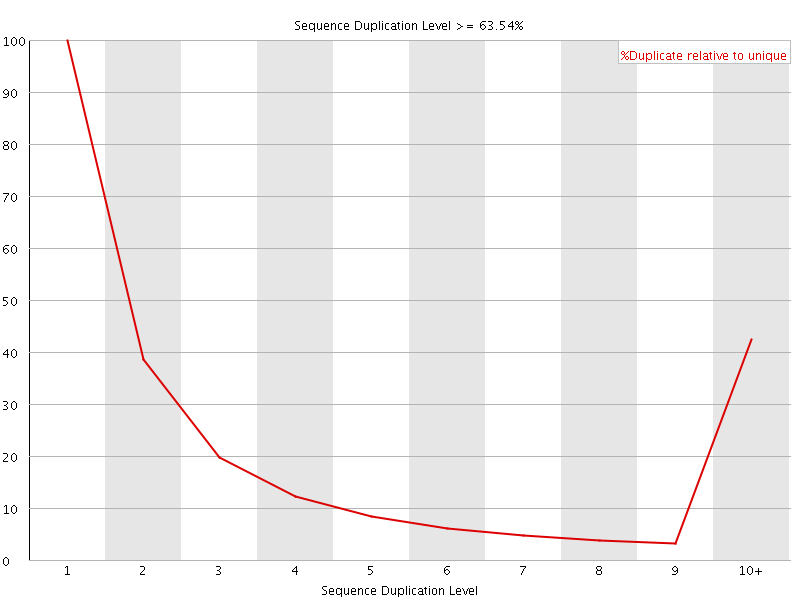
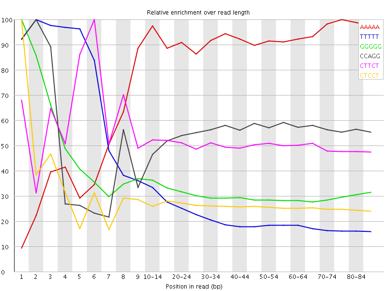

![[OK]](Icons/tick.png) Basic Statistics
Basic Statistics
| Measure | Value |
|---|---|
| Filename | SAMPLE_006_R2.fastq.gz |
| File type | Conventional base calls |
| Encoding | Sanger / Illumina 1.9 |
| Total Sequences | 33687382 |
| Filtered Sequences | 0 |
| Sequence length | 92 |
| %GC | 52 |
Per base sequence quality

Per sequence quality scores

![[FAIL]](Icons/error.png) Per base sequence content
Per base sequence content

Per base GC content

Per sequence GC content

Per base N content

Sequence Length Distribution

Sequence Duplication Levels

![[WARN]](Icons/warning.png) Overrepresented sequences
Overrepresented sequences
| Sequence | Count | Percentage | Possible Source |
|---|---|---|---|
| GGGGGGGGGGGGGGGGGGGGGGGGGGGGGGGGGGGGGGGGGGGGGGGGGG | 35837 | 0.10638107763909942 | No Hit |
Kmer Content

| Sequence | Count | Obs/Exp Overall | Obs/Exp Max | Max Obs/Exp Position |
|---|---|---|---|---|
| AAAAA | 10225735 | 5.388051 | 6.109181 | 75-79 |
| TTTTT | 13616240 | 4.714975 | 18.149977 | 2 |
| GGGGG | 12022635 | 2.826058 | 8.696719 | 1 |
| CCAGG | 8700575 | 2.796108 | 5.0387616 | 2 |
| CTTCT | 7757460 | 2.6764483 | 5.2138786 | 6 |
| CTCCT | 7760650 | 2.6726744 | 9.886165 | 1 |
| CTCCA | 6972755 | 2.611652 | 8.470104 | 1 |
| TCTTC | 7419925 | 2.5599935 | 5.2762465 | 7 |
| CCTCC | 7140885 | 2.454757 | 6.395646 | 1 |
| TCCTC | 7056795 | 2.4302752 | 6.01524 | 2 |
| CCCAG | 6971565 | 2.4165347 | 6.7396955 | 1 |
| TCCAG | 6833705 | 2.3730695 | 5.379273 | 2 |
| CTGGG | 8482835 | 2.3239527 | 6.390482 | 1 |
| CTTCA | 5894840 | 2.2119453 | 5.0852876 | 6 |
| TGGGG | 7867810 | 1.9984044 | 5.056436 | 2 |
| TTTTC | 5655020 | 1.9546314 | 5.121167 | 7 |
| CCCCA | 5030085 | 1.8805928 | 7.7312512 | 1 |
| CCTCT | 5244135 | 1.8060168 | 5.418923 | 3 |
| GGGGC | 6996820 | 1.7739395 | 5.103573 | 2 |
| CTCCC | 5148245 | 1.7697656 | 8.278109 | 1 |
| GGGGA | 6204655 | 1.7139975 | 5.332509 | 1 |
| GTGGG | 6165310 | 1.5659736 | 5.1099563 | 1 |
| TTTTG | 4729470 | 1.5156066 | 5.448079 | 7 |
| CCCCC | 3499690 | 1.2008662 | 5.205791 | 1 |
| CGGGG | 4085675 | 1.0358621 | 5.929126 | 1 |